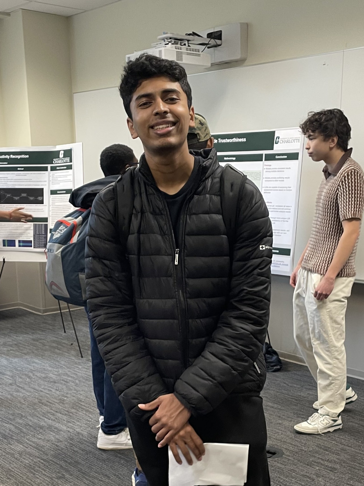

ITIS 3135 Introduction
At the CCI research seminar
- Personal Background: I was born in New Haven, Connecticut but have been in Charlotte for the last 7 years.
- Professional Background: I was a TA for Introduction to Computer Science II (Java) last semester, but now I am TA for Data Structures.
- Academic Background: Sophomore with Data Science major and Computer Engineering minor at UNCC.
- Background in this Subject: I have minimal knowledge about HTML and CSS.
- Primary Computer Platform: Windows Laptop (Lenovo Legion 7 slim)
- Courses:
- ITIS 3135 - Web-Based Application Design and Development: Class seems fun.
- ITSC 3990 - Undergraduate Research: Would allow me to deepen my understanding in the field.
- ITCS 3153 - Introduction to Artificial Intelligence: I thought this class would be useful in the long run.
- ITSC 2181 - Introduction to Computer Systems: Required class.
- ECGR 2104 - Computer Engineering Programming II: Required for minor.
- Funny/Interesting Item about yourself: I love soccer and I support Arsenal.